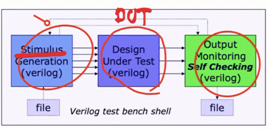
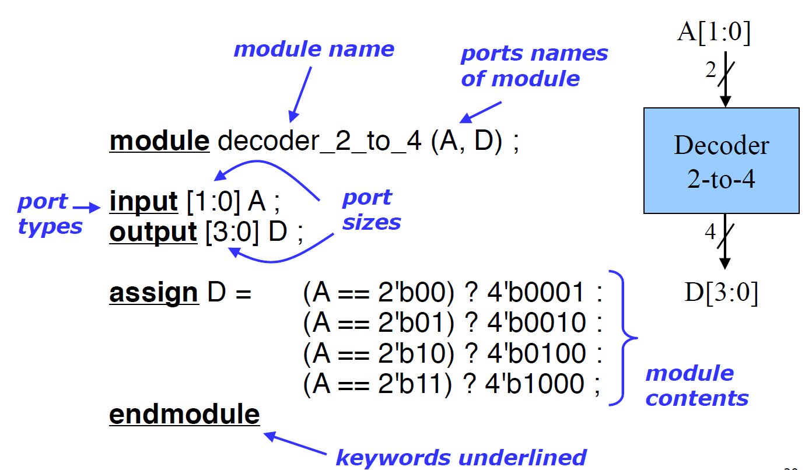
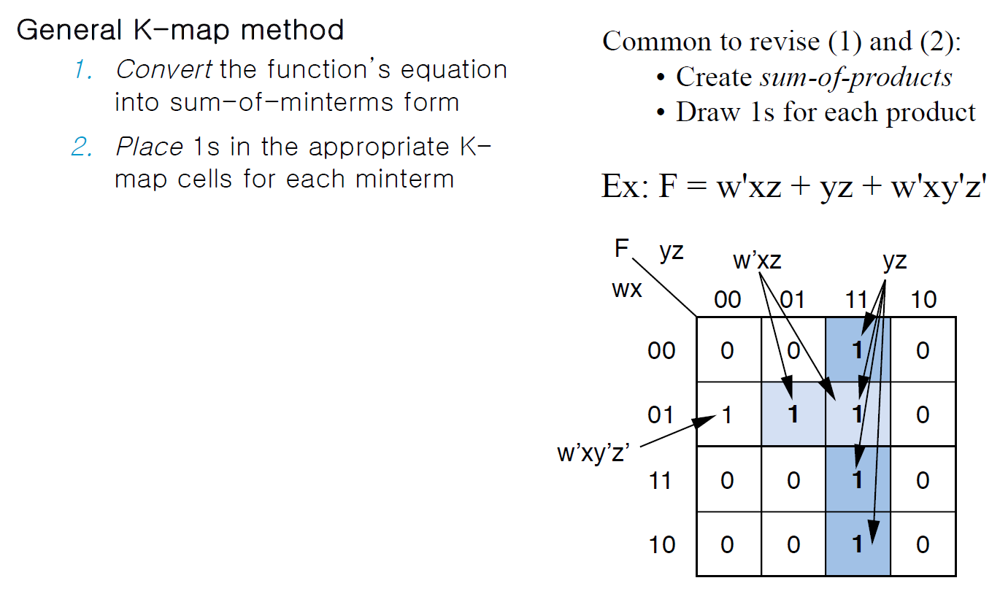

Digital System Circuits Week 7
What is an HDL?
HDL = Hardware Description Language

What is synthesis?
Net list
Why use an HDL?
Other important HDL features
- Serve as input for synthesis tools
Hardware implementations
Hardware building blocks
Standard cells
FPGAs
What is a Netlist?
Verilog module

Karnaugh Maps for Two-level size optimization
K-maps

circle 하나 당 term 하나 -> 최대한 큰 circle 하나를 그리는 것이 식이 간단해짐
Two-level size optimization using K-maps

Don’t care input combinations
X는 1에도 포함 될 수도 있고, 0에도 포함 될 수 있다.